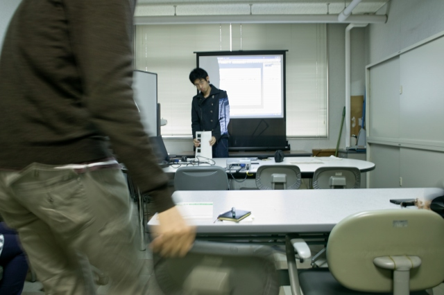
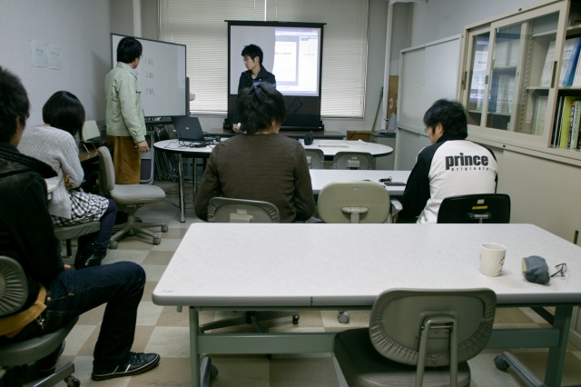
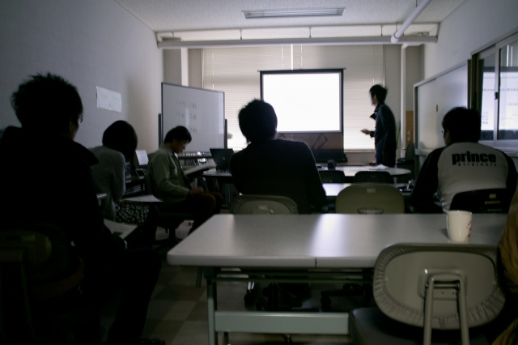
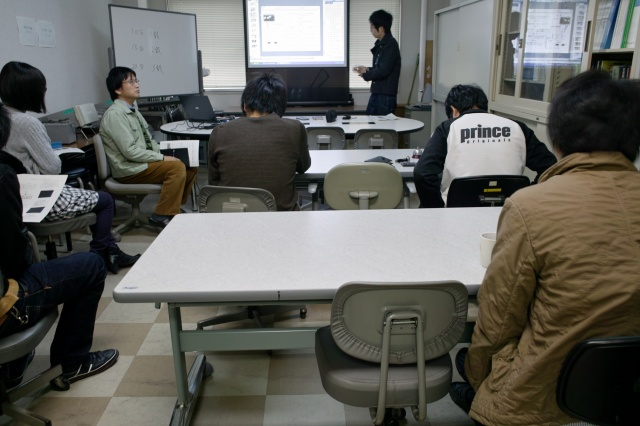
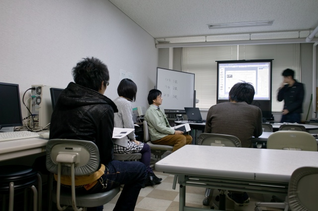

・ 中間発表 (2回目) (H23.12.02)
たった一人の中間発表会．諸事情で
11月25日
に発表できなかったIくんの中間発表会． そういえば去年も
たった一人の中間発表会
ありましたね．

準備中

村田先生の予鈴の説明

発表中

F島くんのフォトインタラプタと可変抵抗についての説明

村田先生のF島くんの説明の要約
助教の私物
の2倍明るいのを研究室に導入です
BACK
© Measurement System Laboratory, Kyoto Institute of Technology.